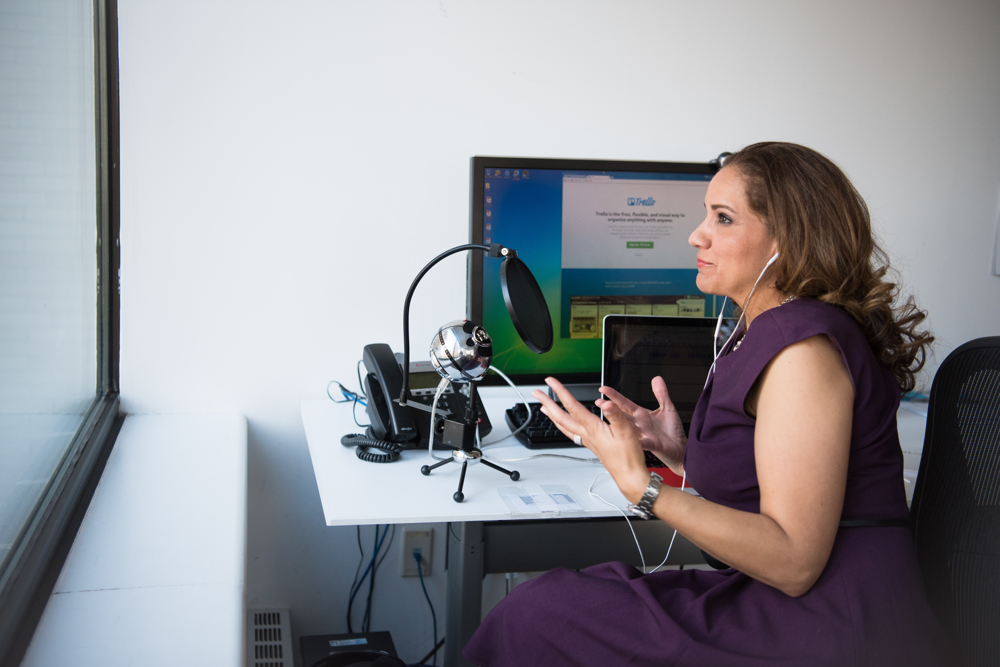

1 / 5

2 / 5
3 / 5
4 / 5

5 / 5

There were nearly 13 million women-owned business in the U.S. as of 2019.(American Express)
Women-owned businesses generated $1.9 trillion in revenue for the U.S. economy in 2019.(American Express)
Despite contributing enormously to the economy, women-owned firms received only 4.75% of federal contracts in 2018.(National Women's Business Council)
In 2018, the average loan size for women founders was 31% lower than it was for male founders.(Biz2Credit)
Show your support for women in your community by investing in businesses run by women and make a difference.